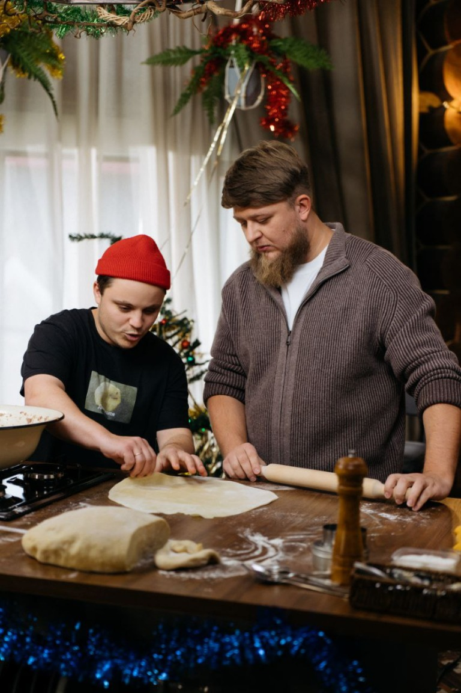
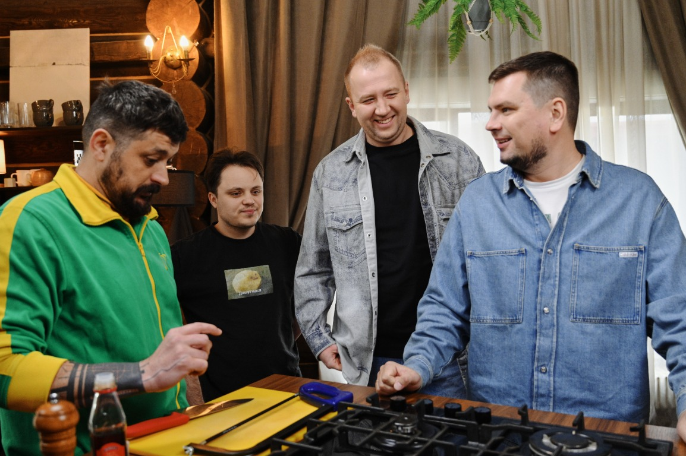
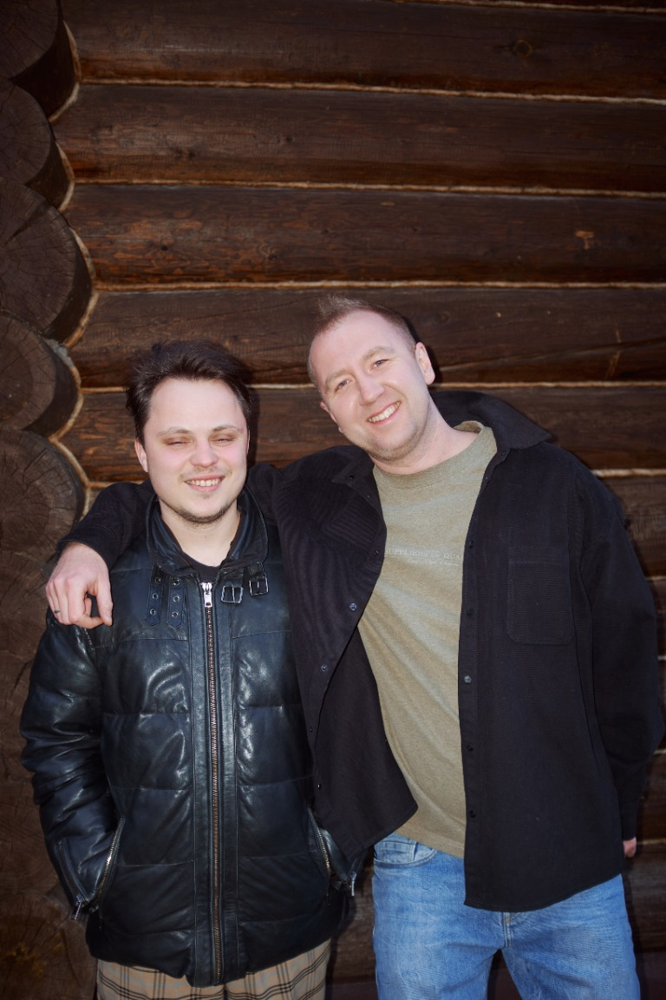
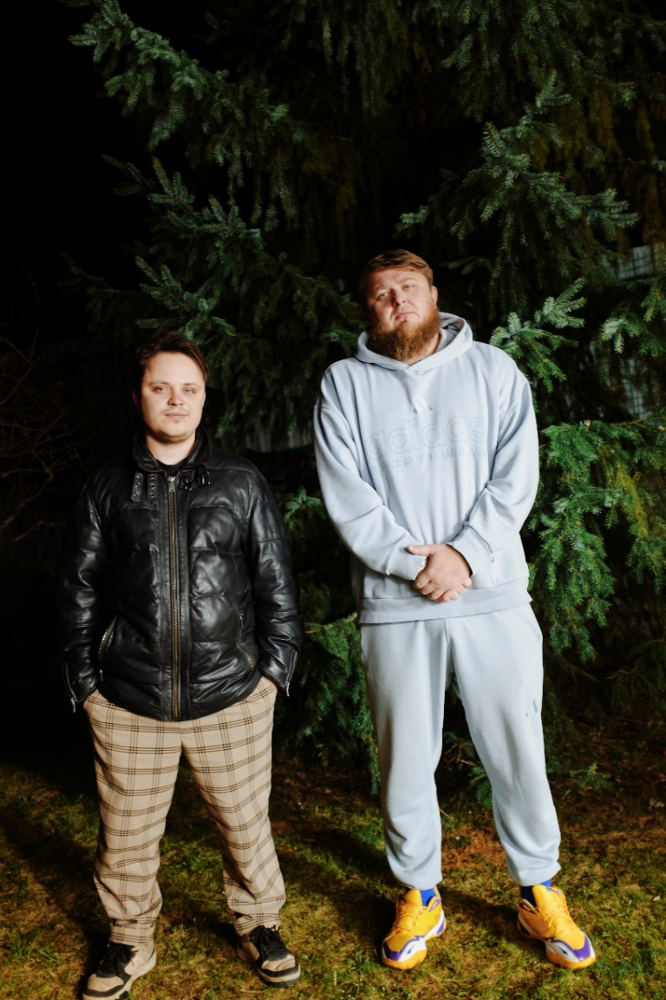
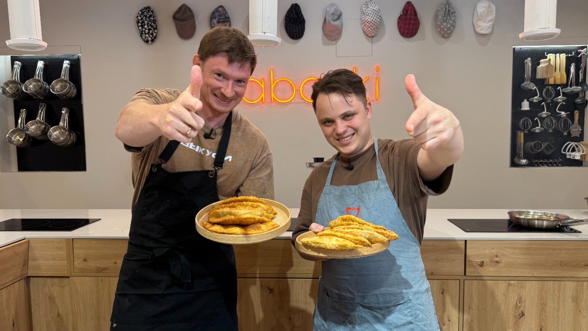

О сотрудничестве
Вкус, который хочется показать
Работал с блогерами Михеевым и Павловым, Грильковым, Анатолием Борщом и Иваном Выкуси. Видео с моим участием выходили на YouTube и во «ВКонтакте».
RAWMIDСотрудничество с компанией и реклама её продукции
ПродакшеныMedium Quality Production и продакшен Анатолия Борща
Фотогалерея
За кулисами проектов





Новый проект
Открыт к интересным идеям
Обсудим съёмку, коллаборацию или гастрономическое событие.
Связаться со мной